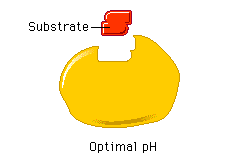

pH and Enzyme Function
pH and Enzyme Function
Each enzyme functions best within a certain pH range. For example, the enzyme pepsin, which works in your stomach, functions best in a strongly acidic environment. Lipase, an enzyme found in your small intestine, works best in a basic environment.
When the pH changes, the active site progressively distorts and affects enzyme function. What happens to catalysis when an enzyme is subjected to a pH far from its optimum range?


In the presence of either excess H+ or excess OH- ions, the globular protein's shape is altered. The active site is distorted and the enzyme cannot catalyze reactions.
 Continue to Temperature and Enzyme Function.
Continue to Temperature and Enzyme Function.